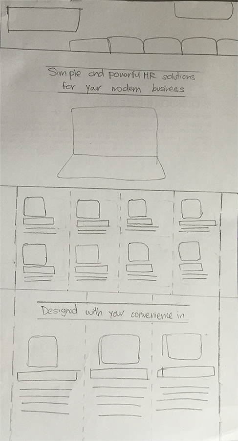

ROLE
I led a team 3, and was heavily involved in the content creation for the pages, setting the visual guidelines for the brand and the front end development.
CONSTRAINTS
Since this wasn't a complete rebranding, we still had to ensure that the website was consistent with the logo and look of Justlogin.
Outcomes
Before
After

Results
With the new redesign, we found that userse were able to create itineraries and able to navigate through the onboarding process and publish a trip with ease.
200%
INCREASE IN TRIAL SIGN UPS
75%
INCREASE IN PAGES VIEWED
Process
In order to achieve our goals, we first usability tested the current Wetravel web app. Based on our findings, we went through a design studio process to generate ideas. We then prototyped and rapidly tested and iterated on our designs. And we then went into a final round of validation testing.
Usability Testing
Redesign Process
A/B Testing
Usability Testing
Comprehension Testing
Before we began, we wanted to test users' comprehension of our current landing pages. We used 5-second comprehension tests on our initial landing pages.
Most users said it was about some sort of software, or about working from the beach. Only 3/15 users were able to decipher that it's a HR software.
Before we began jumping right into spending too much time designing, we wanted to validate our hypothesis that featuring the product front and center with clear header will improve comprehension.
We quickly mocked up a simple landing page without changing any branding, navigation or visual style of the page and tested it. 11/15 users were able to quickly identify it as a page for HR software.
Original Landing Page
Clear Header Test

Redesign Process
Wireframing
Lo Fi Wireframes
Medium Fi Wireframes
Landing Pages
Over the design iterations, we took focus away from featuring all the of the products on the homepage, to featuring only the most popular three, that were the most profitable for Justlogin.
We also took focus away from a feature heavy landing page in versions 1 & 2 to one which only highlighted the top 3 features. The focus instead came towards social proof, with a list of popular clients as well as testimonials.
More prominent CTAs were also included, with a lead generation form placed on the jumbotron itself.
Through the iterations, we were also able to adapt the color scheme of Justlogin. Justlogin's primary colors were red and black. Our initial designs tried to stick to these, which immediately drew attention, however were disctracting from other content. We finally went for a warmer palette, using the black and red only in the logo and as accents.

Imagery Type
For the new website, we also dictated the types of product images that can be used on landing pages, product pages, as well as all branding materials.
We definitely wanted to veer away from the initial use of generic stock photography. Then instead of using just screenshots from the products alone, which were less engaging, we only used images of the product.
Initial Image Style
New Image Style
Initial Image Style
New Image Style

Icon Styles
For the new website, we also dictated the types of product images that can be used on landing pages, product pages, as well as all branding materials.
A/B Testing
After the launch of the website, we continously tweaked our designs to solve any problems and kept on refining the designs that performed better.
We were able to scale up the number of leads sign ups per month to 200% within the first month of the new website launch.
Final Mockups
Home Page
Individual Product Page